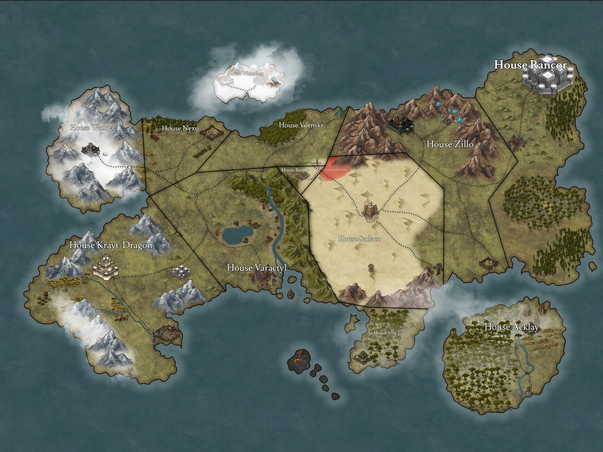

House Krayt-Dragon
House Krayt-Dragon is an ancient noble house of the planet Thrustra, with ties to the early kings and queens of Thrustra or so it was written as such. Ruling in the northern hemisphere of Thrustra their people are not foreign to hardships, nor the cold. The early rulers of the region quickly found their funds left to them by their royal ancestors dried up It was the third petty king, Thalvax Krayt-Dragon, that is credited with truly setting the house on their path to dominance They gained their wealth early on by mining, but quickly went into banking and finally trade. With the wealth their house produced they were able to place it back into their own people's education making many of those under their rule scholars, their healthcare well taken care of and their research and development well funded. All men and women under their rule were conscripted into a mandatory service of ten years, and a reservist for twenty years afterwards, to them there was a difference between citizen and a civilian seeing those that never served Thrustra simply as civilians lowest on the totem pole, though the ruling members of the house did not need to serve each one led their people into battle and for that they were beloved.

Currently the ruler of House Krayt-Dragon, is Maethreh Krayt-Dragon, who took over after the sudden death of her older sister Nali Krayt-Dragon and the abduction and assumed death of her heir Athena. Her sister known as a very kind and benevolent ruler, she loved children and truly feeling as though they were the future of her people the education in her petty kingdom was some of the best as she invested in the arts, and built a medium size university. Though her daughter Athena was a half-breed she was nearly just as beloved as her mother. Remembered as a sweet and soft spoken child, at a young age she already had a sense of justice and honour traits very few were surprised about given not only the lineage of her mother but the rumours of her father's lineage being a Jedi master. To lose both at the same time was hard for the people, but luckily her younger sister was there to help ease the pain. Though her sister is more known for her greed, arrogance, and wrath, she kept her people together during those dark days. She wasn't beloved, but she was well respected.
Krayt-Dragon Legionaires
"Strength in Sacrifice, Honour in Service, Purpose in Living" This creed of the Krayt-Dragon military emphasizes the idea that true strength comes from making sacrifices for a greater cause, while also finding purpose and meaning in one's life through service to others, such as friends, family, work, or nation in general. It highlights the importance of Living a life that is guided by honor, integrity, and selflessness, while pursuing a greater purpose beyond oneself. By embodying these values and living a life of service, military personnel can make a positive impact on the world and inspire others to do the same.
-

Legionaire
Though the army as a whole is called the Krayt-Dragon Legionaires, there is only one style of soldier that gets to hold the title itself. The Legionaire,host new recruits led by veterans, preferably ones that have seen action has the seniority. Armed with a blaster as a side arm, an electrified vibroblade and shield as their main weapon. Armed with metal mined from their own mines, light weight yet very durable.
-

Naval Pilots
House Krayt-Dragon doesn't have much for a navy, one capitol class battleship, one medium size destroyer the rest small strikefighters. With this they aide the other houses and the high king in protecting Thustra soverign space. Rather that be from foreign invaders, pirates, smugglers or domestic terrorists. They are equip with a standard spacesuit, their helm providing an air supply as well as filter. their armour very light weight, mostly made of a cloth like material. They carry one blaster and one cutlass style vibroblade.
-

Officers
House Krayt-Dragon military officers have a strong sense of duty, honor, courage, and integrity They are also expected to show respect for their superiors, their peers, and their subordinates, as well as for the laws, customs, and traditions of their country. Another important value for military officers is the willingness to make sacrifices.To become an officer, individuals must pass rigorous selection and training processes. Officers are responsible for the safety and well-being of their troops, and are expected to uphold the highest standards of professionalism, integrity, and service.
-

Dragon's Guard
The Dragon's Guard, an elite military force tasked with protecting the noble family and carrying out high-risk, special operations missions. These highly-trained soldiers are easily recognizable by their thick black durasteel armor, emblazoned with the fierce image of a krayt-dragon. Armed with vibroblades, shields, spears, and small sidearms,the Dragon's Guard is a force to be reckoned with. As the protectors of the noble family, the Dragon's Guard take their duty very seriously, strict with traditions they revere the line of succession. They are trained to react quickly and decisively in any situation, and their loyalty to their charges is absolute. They are prepared to put themselves in harm's way to defend the noble family, and are well-equipped to do so. The combination of their armor and weaponry makes them formidable opponents, and they are trained in a variety of fighting techniques to overcome any challenge. In addition to their protective duties, the Dragon's Guard is also called upon to carry out special operations missions on behalf of the petty kingdom. in combat make them the ideal candidates for these high-risk missions, which often involve sabotage, infiltration,assassinations, Their extensive training and expertise or intelligence gathering. The Dragon's Guard is known for their ability to complete these missions with precision and efficiency, always carrying out their duties with the utmost professionalism. Overall, the Dragon's Guard is a force to be reckoned with. Their commitment to their duty, their rigorous training, and their impressive weaponry and armor make them a formidable presence on the battlefield. Whether protecting the noble family or carrying out special operations missions, the Dragon's Guard is always prepared to do whatever it takes to get the job done.
Character History of Athena Krayt-Dragon
The Great Krayt Dragon is one of the most fearsome beasts one could encounter in the galaxy, it lies in the sand alone, swimming beneath the surface and though his size large he can choose to be unseen. He chooses his strikes and its prey well. It lies there awaiting its target then without notice strikes only to bring its prey beneath the sands with him leaving not a trace. It is no wonder that this creature was chosen by my ancestors chose the beast as our house banner and namesake. I was born on Thustra, into a life of pampered luxury, into the House of Krayt-Dragon. My mother a noble woman. I never knew my father, But I had heard tales of him, a strong chinned man with fiery orange eyes and dark hair, a Jedi. He met my mother while on a mission for his Order, and she helped the young Jedi, and through their time together they fell in love. But he loved the Jedi Order more than he loved my mother, and my mother somehow respected this. Her kind heart, perhaps her weakness pushed him back into the Jedi understanding his loyalties to the Order and the supposed importance to his duties. My mother loved by man had few enemies but one of them understood the importance of patience as they slowly poisoned her, forcing her to become ill. It took over fourteen months before the poison dealt its final blow. But as I sat by her bedside, a young woman dressed in fine clothing,same fiery orange eyes of my father and flushed skintone, mixed with the curves of my mother and her golden blonde hair with the ears that marked my heritage, was regaled with the stories of my father and why I carried his last name. I was regaled with the stories of my families past and the legacy of House Krayt, but like mother such things would die with her. Her body barely cold before those who conspired against her made their move, forcing their will to become my guardian. Unable to hold the treasures of my house due to a lack of maturity and age, my guardians easily gained their wish. My new warden a second cousin, he held both lineage and age over me and entrusted with the finances of my house, by my aunt. A ruse to steal my power. He was a pitiful man, a disgrace to what it means to be Sephi, lacked intellect, sophistication, elegance, cleanliness. He wasted no time in gambling my inheritance with on the moon of Nar Shaddaa, and within the dark places of Thustra itself. But his foolishness was perhaps my salvation, as his ignorance would one day catch up to him as he crossed the wrong person. I still hear the screams of servants, of his wife and children, as they begged to keep their breath still within them. Yet this dark cloaked showed no empathy to their cries, I closed the door behind me after all why would I care what he did to these thieves that murdered my mother and stole my inheritance. But perhaps I should have cared, as I heard his footsteps rhythmically come closer, and closer before hearing the air pressured doors release. The hum of his red lightsaber, a darkness radiated off of him, as he stared at me he gave no apologies, he showed just as much empathy for me as he did my captors and as he rushed forward a pressured built up in my belly, that fear that fight or flight and without understanding it my body took over extending my hands and arms outwards the man facial features changed as he slowly tilted his head we both were caught off guard at what just happened. He regained himself quickly gliding forwards with a quickness I had never seen before, his lightsaber going dark before feeling something blunt hit my skull then darkness.When next I woke I was here in Corbos, the mysterious dark figure absent. I will however return one day, but for now…I will lie alone, learning how to swim in the sand and at the right time, reveal myself striking at my prey taking back what is mine.
The Reclaimation
I am driven by a desire for revenge against my aunt and have trained under some of the finest Sith in her empire, including the Wrath and High Lord Venkalt, a clever and cunning Twilek. The time has come for the reclamation of what was stolen from me, and I will do whatever it takes to achieve my goals. My plan was to cause chaos using a group of pirates as pawns, but I soon discovered that the pirates themselves were working for a Sephi man who is no friend of my aunt. We met on his ship and formed an alliance: if he aided me in my goal, I would aid him in his nefarious business dealings, smuggling goods in and out of Thustra. With the Sephi man's help, I obtained information on all the major houses and petty kingdoms of Thustra. I set up a meeting with House Vornskr, a small but proud house who wanted their ancestral land back. However, House Sarlacc, who rules the deserts of Thustra, blocked their advancements at every turn. I was tasked with negotiating with House Sarlacc to get them to return the lands to House Vornskr. My original plan was to discuss the matter and get them to see reason, but perhaps I could kill two romp rats with one blaster bolt. I need to cause chaos and turn the people against my aunt. So I snuck into a small armory within the territory of House Krayt-Dragon, outside of Valtara, a city near the border, far from the capital city of Xeros. After stealing an officer's uniform and planting a spyware virus within their server, I gained access to their incoming and outgoing messages to that armory and their officers' staff. With the success of my mission, I was ready to put my plan into action.